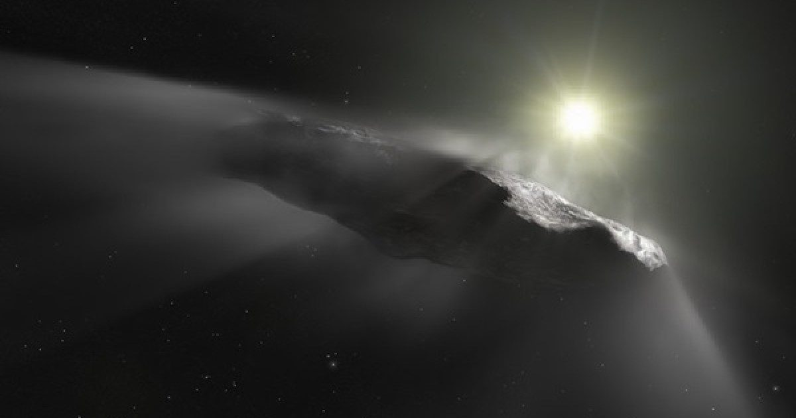

19 октября 2017 г.: Открытие Оумуамуа
Где-то около 1837 года странный объект прошел невидимую космическую милю: 1000 астрономических единиц от Солнца.
(Одна астрономическая единица, или а.е., - это среднее расстояние Земля-Солнце.) Более века он оставался незамеченным по направлению к нашей звезде.
Наконец, 19 октября 2017 года посетителя заметили люди.
Той ночью слабый, тонкий Продолжение чтения «19 октября 2017 года: Открытие Оумуамуа» Сообщение 19 октября 2017 года: Открытие Оумуаму